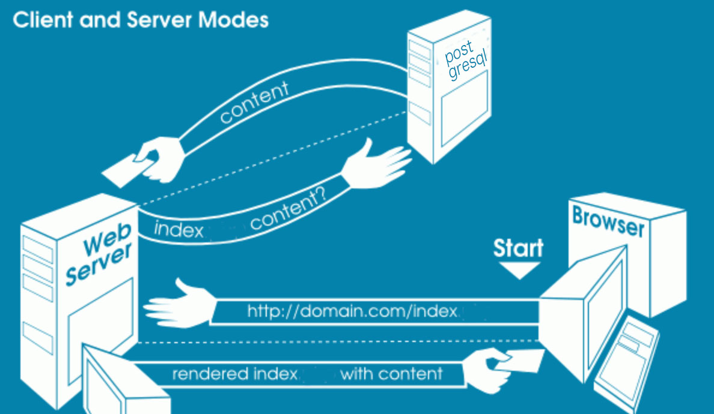
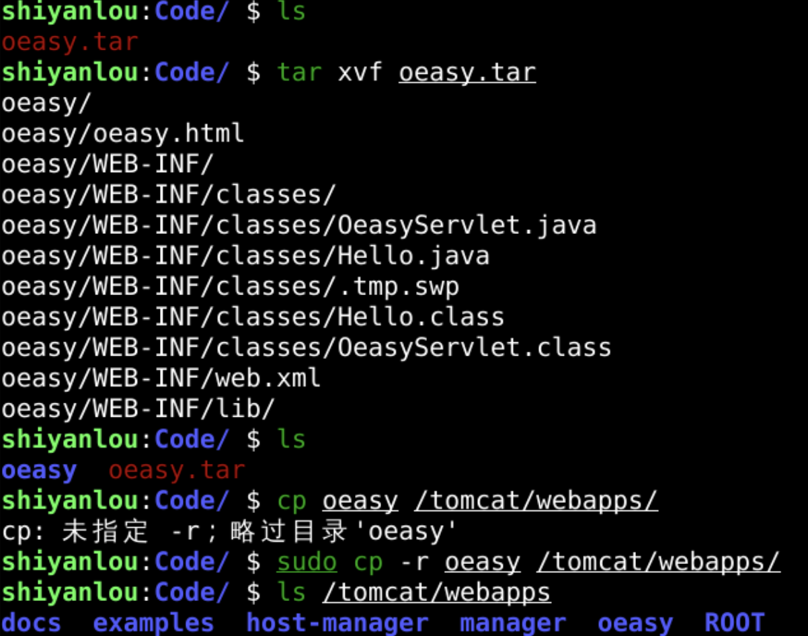
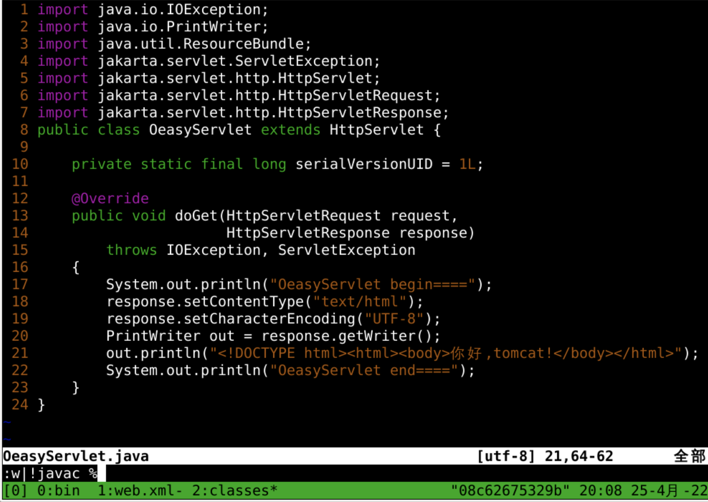
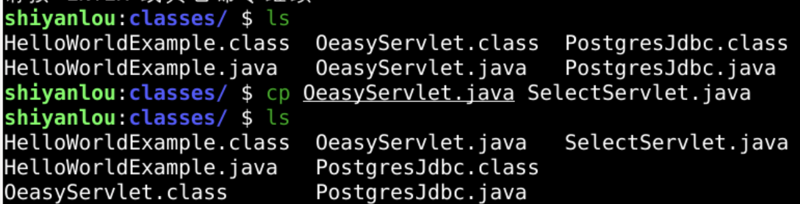
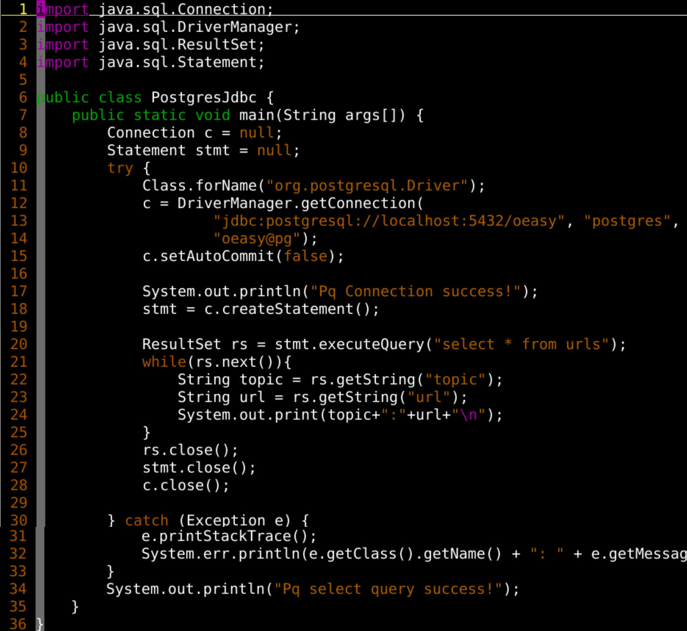
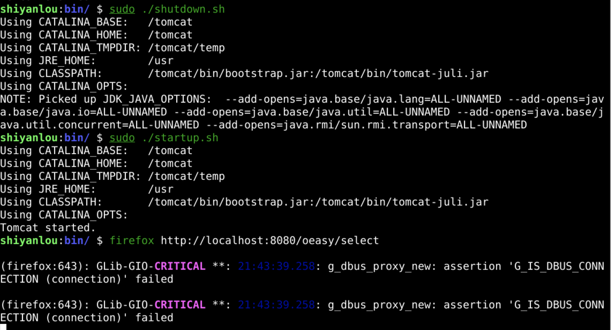
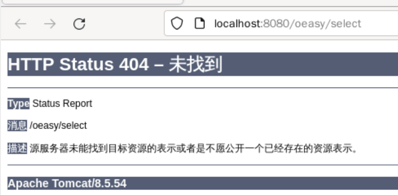
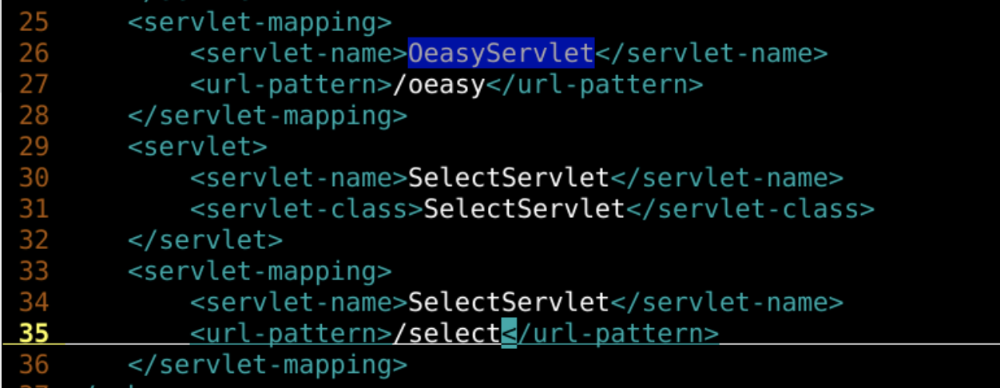
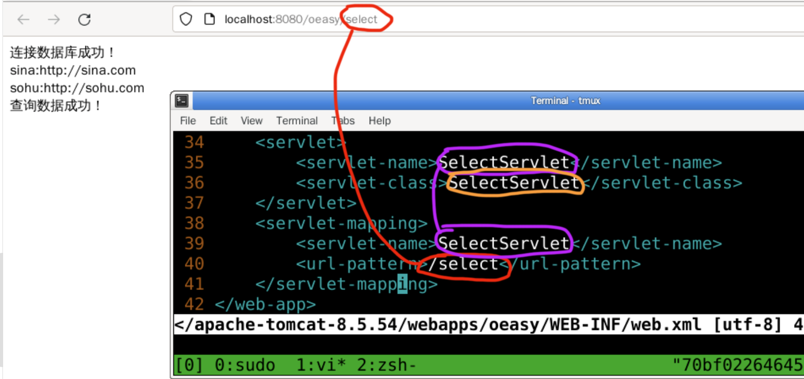
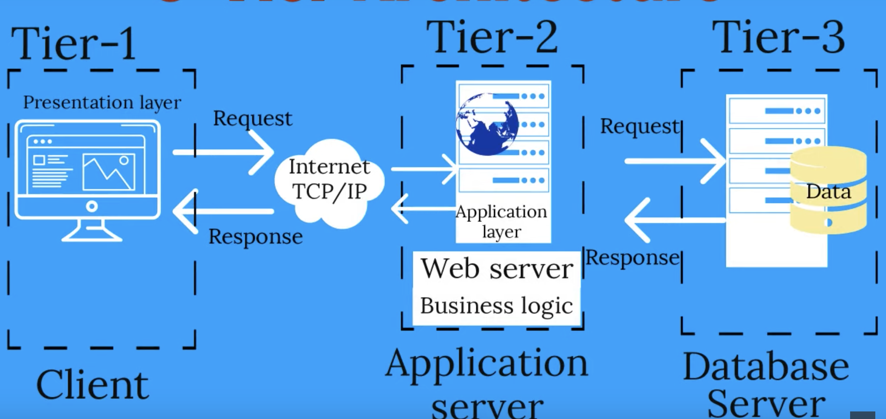

动态网页
回忆
- 上次我们编辑 Postgres.java 成功访问了 pq数据库
- 首先要导入类库
- 然后要开启数据库
- 并了解数据库的用户名密码
- 要用正确的连接、库、表、字段
- 还要使用正确的sql语句
- 准备工作完毕
- all parts accounted for.
- 下一步就是要整合servlet
- 在浏览器里面把页面显示出来
- 客户通知堂倌
- 让堂倌通知大厨
- 后厨做好内容
- 堂倌上菜
- 客户吃上饭
- 这又怎么做呢？🤔

恢复app

- 可以把上上次备份的应用恢复出来
资源
- 不但整合代码
- 也要整合需要用到的包

- 这个是一个原始的servlet
- 他接收请求request
- 作出响应
- 在网页中显示
你好,tomcat
复制

- 先把OeasyServlet.java另存为SelectServlet.java
- 并以SelectServlet.java为基础整合Postgres.java
整合

- 新的servlet还是
- 接收请求request
- 作出响应response
- 只不过这个响应的内容来自数据库查询结果
- 数据库查询来自于PostgresJdbc.java
编译
import java.sql.Connection;
import java.sql.DriverManager;
import java.sql.ResultSet;
import java.sql.Statement;
import java.io.IOException;
import java.io.PrintWriter;
import jakarta.servlet.ServletException;
import jakarta.servlet.http.HttpServlet;
import jakarta.servlet.http.HttpServletRequest;
import jakarta.servlet.http.HttpServletResponse;
public class SelectServlet extends HttpServlet {
private static final long serialVersionUID = 1L;
@Override
public void doGet(HttpServletRequest request,
HttpServletResponse response)
throws IOException, ServletException
{
response.setContentType("text/html");
response.setCharacterEncoding("UTF-8");
PrintWriter out = response.getWriter();
out.println("<!DOCTYPE html><html><body>");
Connection c = null;
Statement stmt = null;
try {
Class.forName("org.postgresql.Driver");
c = DriverManager.getConnection(
"jdbc:postgresql://localhost:5432/oeasy", "postgres",
"oeasy@pg");
c.setAutoCommit(false);
out.println("connection is ok<br/>");
stmt = c.createStatement();
ResultSet rs = stmt.executeQuery("select * from urls where topic like 's%'");
while(rs.next()){
String topic = rs.getString("topic");
String url = rs.getString("url");
out.print(topic+":"+url+"<br/>");
}
rs.close();
stmt.close();
c.close();
} catch (Exception e) {
e.printStackTrace();
System.err.println(e.getClass().getName() + ": " + e.getMessage());
}
out.println("select query is ok!<br/>");
out.println("</body></html>");
}
}
- 输出的response来自于数据库
- 数据库是通过驱动
- 来读写本地localhost的5432端口
- 得到相应的数据的
- 编译没有问题
- 重启服务器

- 在浏览器中访问资源
访问

- 看起来是从url到class没有相应的路由
- 那么我们要配置web.xml
<?xml version="1.0" encoding="UTF-8"?>
<web-app xmlns="http://xmlns.jcp.org/xml/ns/javaee"
xmlns:xsi="http://www.w3.org/2001/XMLSchema-instance"
xsi:schemaLocation="http://xmlns.jcp.org/xml/ns/javaee
http://xmlns.jcp.org/xml/ns/javaee/web-app_3_1.xsd"
version="3.1">
<display-name>Hello, World Application</display-name>
<description>
This is a simple web application with a source code organization
based on the recommendations of the Application Developer's Guide.
</description>
<servlet>
<servlet-name>HelloServlet</servlet-name>
<servlet-class>HelloWorldExample</servlet-class>
</servlet>
<servlet-mapping>
<servlet-name>HelloServlet</servlet-name>
<url-pattern>/hello</url-pattern>
</servlet-mapping>
<servlet>
<servlet-name>OeasyServlet</servlet-name>
<servlet-class>OeasyServlet</servlet-class>
</servlet>
<servlet-mapping>
<servlet-name>OeasyServlet</servlet-name>
<url-pattern>/oeasy</url-pattern>
</servlet-mapping>
<servlet>
<servlet-name>SelectServlet</servlet-name>
<servlet-class>SelectServlet</servlet-class>
</servlet>
<servlet-mapping>
<servlet-name>SelectServlet</servlet-name>
<url-pattern>/select</url-pattern>
</servlet-mapping>
</web-app>
细节
- 我们配置web.xml
- 注意最后一组映射

- 然后重启服务器

- 顺利地读出了postgres里面的oeasy库中的urls表中的信息！
- 如果有问题可以去日志里面看看
- 有可能是因为postgres服务没有开
- 很开心！
- 整合成功
回顾


- 如果web服务器同时是数据库服务器
- 又做堂倌又做大厨
摊位
- 又收钱、又做饭
- 信息传递成本低
- 个体任务量大
分工

- 专门有个数据服务器
- 分工
- 职业优化
- 应用服务器向数据库服务器发请求
- 数据库服务器接收请求并进行响应
三种连接数据库的方式
- 用psql客户端直接连接
- 直接用数据库管理员登录数据所在服务器
- 用psql程序直接和数据库进行交互
- 用java程序通过postgres的driver连接
- 加载postgres的driver的类库
- 使用java调用驱动中的api进行连接并查询
- 运行后在终端显示查询结果
- 用tomcat的servlet通过postgres的driver连接
- 在tomcat的servlet的基础上
- 加载postgres的driver的类库
- 使用java调用驱动中的api进行连接并查询
- 编译成class文件后映射到url
- 在浏览器访问响应url的时候
- 执行相应的代码
- 运行时访问数据库并得到结果
- 将结果输出到浏览器的response中
合作

- 堂倌(tomcat)和厨师(postgresql)之间
- 合作顺利！！！
总结
- 这次在tomcat搭建了servlet用来访问postgres数据库
- 在webapp下面的WEB-INF/web.xml中
- 建立了 url-pattern 和 servlet-name 之间的关系
- 建立了 servlet-name 和 servlet-class 之间的关系
- 制作了 servlet 的 class 并且再浏览器中访问
- 这样就可以在浏览器查看 select 语句的结果了
- 不过每次修改代码都要重启 tomcat 这太麻烦了
- 我想要不重启 tomcat 自动加载 class
- 可以么？🤔
- 下次再说！👋